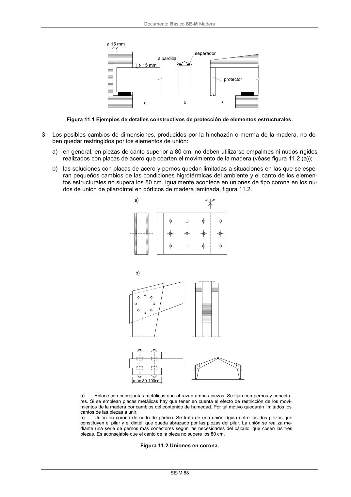

DB-SE-M Madera · edición 2019-12-20 · capa oficial
Documento DB-SE-M-oficial · SHA-256 del PDF 26b5819839ebfda78b0b119c5e76a0a37773b0d763c05688541870075df93718
Página física 94 de 132.
Copia fiel del PDF fuente · Fuente oficial
Ficha de la disposición en la fuente oficial
Formato: Texto de la página (Markdown)
Documento Básico SE-M Madera SE-M 88 Figura 11.1 Ejemplos de detalles constructivos de protección de elementos estructurales. 3 Los posibles cambios de dimensiones, producidos por la hinchazón o merma de la madera, no de- ben quedar restringidos por los elementos de unión: a) en general, en piezas de canto superior a 80 cm, no deben utilizarse empalmes ni nudos rígidos realizados con placas de acero que coarten el movimiento de la madera (véase figura 11.2 (a)); b) las soluciones con placas de acero y pernos quedan limitadas a situaciones en las que se espe- ran pequeños cambios de las condiciones higrotérmicas del ambiente y el canto de los elemen- tos estructurales no supera los 80 cm. Igualmente acontece en uniones de tipo corona en los nu- dos de unión de pilar/dintel en pórticos de madera laminada, figura 11.2. a) Enlace con cubrejuntas metálicas que abrazan ambas piezas. Se fijan con pernos y conecto- res. Si se emplean placas metálicas hay que tener en cuenta el efecto de restricción de los movi- mientos de la madera por cambios del contenido de humedad. Por tal motivo quedarán limitados los cantos de las piezas a unir. b) Unión en corona de nudo de pórtico. Se trata de una unión rígida entre las dos piezas que constituyen el pilar y el dintel, que queda abrazado por las piezas del pilar. La unión se realiza me- diante una serie de pernos más conectores según las necesidades del cálculo, que cosen las tres piezas. Es aconsejable que el canto de la pieza no supere los 80 cm. Figura 11.2 Uniones en corona.
